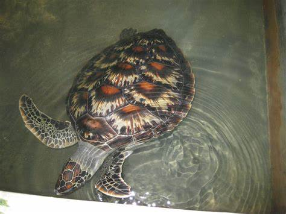

Turtle Population in Sri Lanka
- Sri Lanka is home to five out of seven species of sea turtles in the world
- The turtle population in Sri Lanka is threatened by various factors such as beach erosion, pollution, and poaching
- The turtle hatcheries in Sri Lanka play a crucial role in protecting the turtle population and raising awareness about their conservation
Threats to Turtles in Sri Lanka
- Poaching for meat and eggs
- Coastal development leading to beach erosion and loss of nesting sites
- Pollution from plastic waste and oil spills
Hikkaduwa Turtle Hatchery

Hikkaduwa Turtle Hatchery is located on the southern coast of Sri Lanka and is known for its turtle conservation efforts. It is home to different species of turtles such as Green Turtles, Olive Ridley Turtles, and Hawksbill Turtles.
The hatchery provides a safe place for turtles to lay their eggs and also helps to release the baby turtles back to the sea. Visitors can also learn about the conservation efforts and the threats faced by turtles in the wild.
Other Turtle Categories
Kosgoda Turtle Hatchery
Kosgoda Turtle Hatchery is located in the Southern part of Sri Lanka and is one of the oldest turtle hatcheries in the country. It is home to different species of turtles such as Green Turtles, Olive Ridley Turtles, and Hawksbill Turtles.
The hatchery provides a safe place for turtles to lay their eggs and also helps to release the baby turtles back to the sea. Visitors can also learn about the conservation efforts and the threats faced by turtles in the wild.
Bentota Turtle Hatchery
Bentota Turtle Hatchery is located on the western coast of Sri Lanka and is also known as the Induruwa Turtle Hatchery. It is home to different species of turtles such as Loggerhead Turtles, Green Turtles, and Hawksbill Turtles.
The hatchery provides a safe place for turtles to lay their eggs and also helps to release the baby turtles back to the sea. Visitors can also learn about the conservation efforts and the threats faced by turtles in the wild.
Contact Us
For any inquiries or questions, please fill out the form below or contact us using the provided details.
Contact Information
Address: 123 Main Street, Colombo, Sri Lanka
Phone: 076 3755 374
Email: Rakeshnandakumar2005@gmail.com